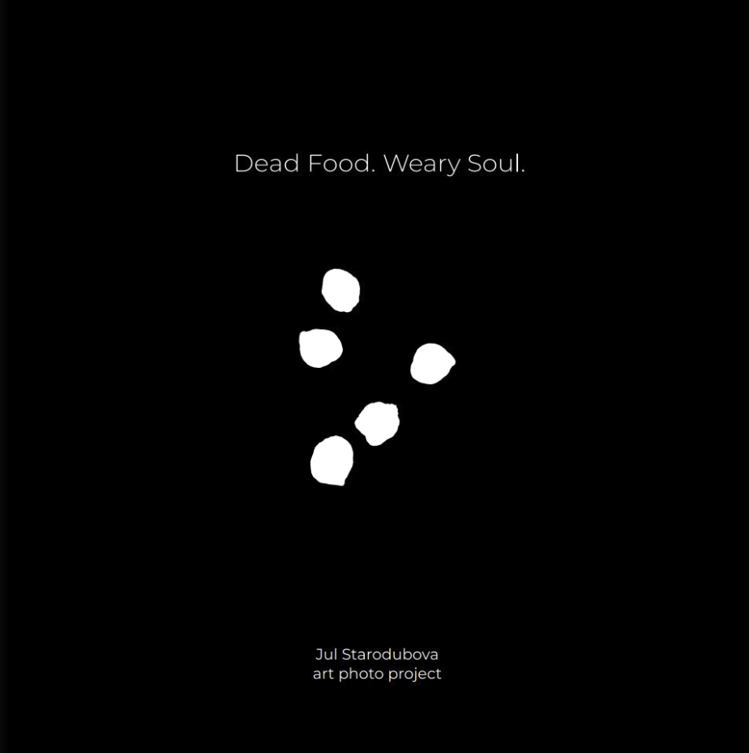
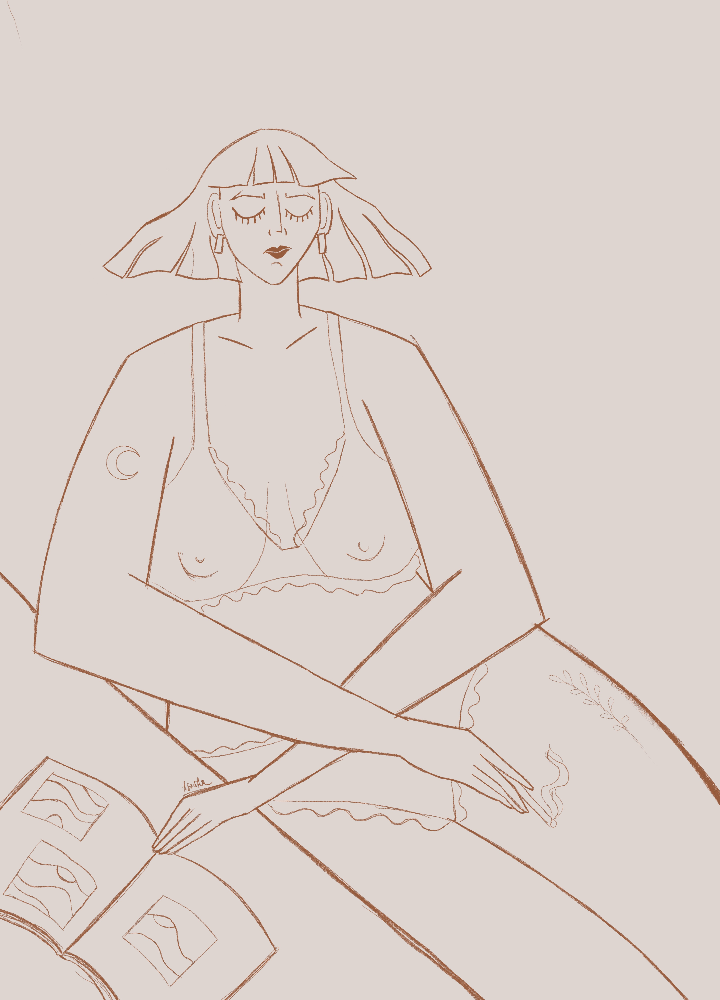
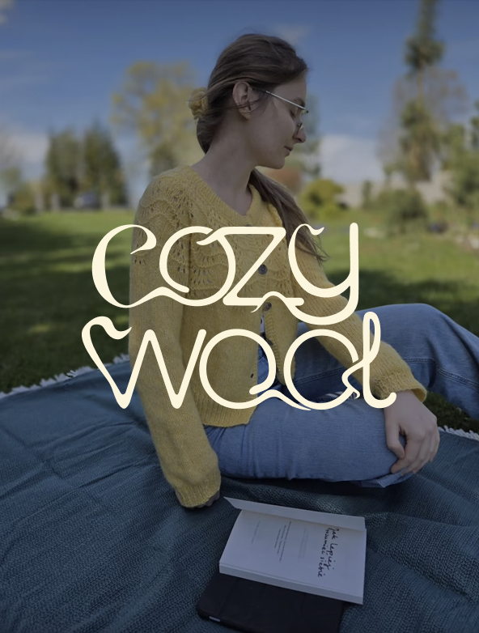

Design & art
explorations shaped
by curiosity
A collection of things I make outside of websites and code.
Side Quests is where I keep the projects I work on
just because I’m curious, inspired, or want to try something new.
Logos, illustrations, paintings, experiments, crafts, and whatever
else I happen to get into next.
‒ Explore my art, illustration, design, and other projects

Art/Photo Book Design 

Selected Illustrations
